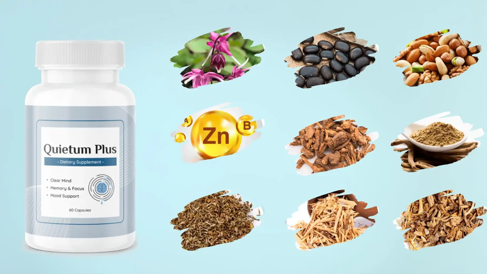
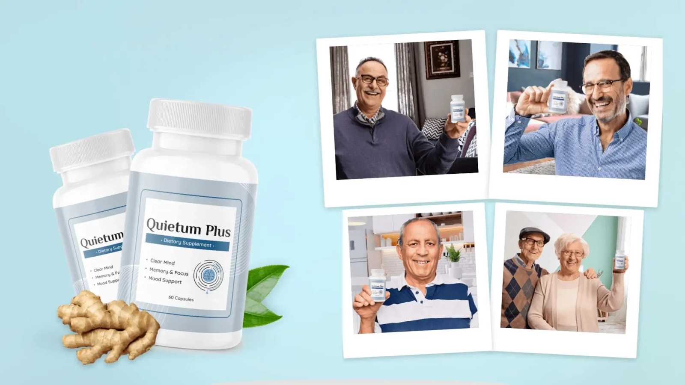
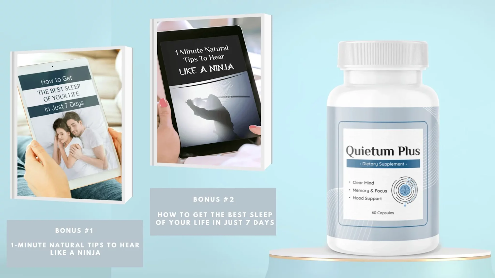

((QUIETUM PLUS Review)) 🚨BE CAREFUL🚨 QUIETUM PLUS REVIEWS - QUIETUM PLUS TINNITUS

Age-related hearing decline and tinnitus affect millions seeking safe, natural solutions for improving auditory wellness. Supplements like Quietum Plus promise relief through their formulations, but navigating options can be challenging.
This review aims to analyze the evidence on Quietum Plus thoroughly to help readers make optimal decisions for their needs. We examine the ingredients, proposed benefits, scientific research, safety considerations, and unfiltered customer feedback objectively.
Our goal is not to promote Quietum Plus as a cure-all but to empower consumers with unbiased insights and details to evaluate its suitability. With so many hearing health supplements available today marketed using bold claims, we believe scrutinizing the science and real-life customer experiences is crucial. This enables factual decision-making around incorporating Quietum Plus versus alternatives.
Our sole focus is providing readers with the tools and unfiltered information necessary to determine what best supports their hearing health goals.
Quietum Plus Reviews: Ingredients That Support Ear Health Examined
I’m sure you want the straight facts – what is this stuff, does it really work, is it safe? I get it, and I’ve done my homework to get you the details. In this review, I’ll walk through how Quietum Plus aims to improve ear health, the science and research behind its ingredients, potential pros and cons to consider, pricing, and any bonus products that come along with it.
My goal is to summarize everything in simple terms, so you can determine if Quietum Plus might be worth a shot for you. I’ll share the facts objectively, but also give you my personal take since I know how frustrating ear problems can be. Sound good? Let’s dive into the Quietum Plus reviews.
Supplement Name | Quietum Plus |
Main Purpose | Tinnitus Relief |
Formulation | Capsules |
Active Ingredients | ▪️ Maca root ▪️ Epimedium ▪️ Dong Quai ▪️ Ginger ▪️ Catuaba powder ▪️ Ashwagandha ▪️ Asparagus ▪️ L-Tyrosine ▪️ L-Arginine ▪️ Vitamin A ▪️ Vitamin B ▪️ Zinc ▪️ Piperine ▪️ Muira Puama ▪️ Damiana ▪️ Tribulus Terrestris ▪️ Sarsaparilla Root |
Benefits | ▪️ Address the cause of tinnitus or ear ringing ▪️ Restore age-related hearing loss ▪️ Protection to inner ear cells from any damage ▪️ Improve brain health ▪️ Help with anxiety and depression |
Manufacturing Standards | ▪️ GMP certification ▪️ FDA-registered facility ▪️ GMO-free ▪️ Natural Ingredients |
Total no of capsules | 60 capsules |
Recommended Usage | 2 capsules per day |
Warning | ▪️ Not Intended for Person under 18 yrs ▪️ NotI ntended for pregnant ladies, and Nursing mothers |
Money Back Guarantee | 60-days Money Back Guarantee |
Pricing | ▪️ 1 bottle package: 30 day supply: $69 per bottle ▪️ 3 bottles package: 90 day supply: $59 per bottle + free bonuses ▪️ 6 bottles package: 180 day supply: $49 per bottle + free bonuses |
Bonus | ▪️ BONUS #1 – 1-Minute Natural Tips To Hear Like a Ninja ▪️ BONUS #2 – How to Get the Best Sleep of Your Life in Just 7 Days |
Availability | Only Through Official Website |
Official Site |
What Is Quietum Plus?
Quietum Plus is a natural dietary supplement that includes a potent plant and vitamins based blend which helps to treat the root cause of ear ringing and tinnitus. It also helps to clear the mind, and improve memory, focus, and mood support. The manufacturer assures that the supplement is manufactured in an FDA-approved facility by following all GMP guidelines, so it is free from any sort of side effects.
It contains 100% natural ingredients such as Maca root, Tribulus Terrestris, Dong Quai, Ginger, Catuaba Powder, Ashwagandha, Piperine, and more which will be discussed in the next section of our Quietum Plus reviews.
Quietum Plus comes in an easy-to-swallow capsule form and it is non-GMO and vegan-friendly too. A Quietum Plus bottle contains 60 Gluten-free capsules that’s enough for a month’s consumption.
Quietum Plus Ingredients: What Makes Up The Supplement?
Quietum Plus ear ringing relief consists of 100% natural ingredients. Some of the key ingredients included in the supplement are:

Maca root: Maca root consists of vitamins and minerals that are proven to be effective in addressing the real cause of tinnitus. It can restore your ear’s health and prevent oxidative stress caused by free radicals.
Epimedium: Epimedium consists of lots of antioxidants that help to restore the damage caused to your inner ear due to oxidative stress. It also has antidepressant effects and helps regulate neuroinflammation.
Dong Quai: It is a herb that has zillions of health benefits. Dong Quai helps sharpen your ear health and also improves your cognitive health.
Ginger: Ginger has anti-inflammatory properties and contains strong antioxidants. So it promotes nerve regeneration and protects against free radicals.
Catuaba powder: Catuaba powder improves blood circulation to your inner ear and this herb has strong neuroprotective qualities. It also helps with nervousness, sleep disorders, and improves sexual health.
Ashwagandha: It is a herb that is widely used to treat a variety of health issues. Ashwagandha is mostly ayurvedic herb which is a strong adaptogen that prevents cell degeneration.
Asparagus: Asparagus contains folate that helps protect your inner ear from toxins and free radicals. It can protect nerve tissue inside your ear and promote cognitive health.
L-Tyrosine: L-Tyrosine not only helps to improve hearing health, but it also has many other health benefits. It is a good mood booster, it helps balance blood pressure and even helps with anxiety and depression.
Apart from all these herbs, Quietum Plus capsules also contain L-Arginine, Vitamin A, Vitamin B, Zinc, Piperine, Muira Puama, Damiana, etc. All these ingredients are sourced naturally and have been processed under strict, sterile, and precise standards. Also, each of them is scientifically proven to be efficient in addressing the actual cause of ear-related issues.
Click Here to Order Quietum Plus From Official Website
How Does The Supplement Work?
Quietum Plus dietary supplement works by protecting your ears from any kind of damage. It is a natural solution for tinnitus and ear ringing. As we have mentioned above, the supplement consists of 100% plant-based ingredients that are efficient in treating any ear-related issues and are discovered by scientists to treat the real root cause of tinnitus.
Tinnitus is a condition that is linked to the nerves that carry electrical signals and sounds from your inner ear cells to your brain networks. The ingredients included in the Quietum Plus can regenerate and rebuild if any damage is caused to these nerves.
Quietum Plus ear ringing relief formula also helps to improve the blood circulation to your inner ear which strengthens the inner ear cells and provides protection against the damage caused by free radicals. Manufacturer also claims that the Quietum Plus tinnitus relief supplement can improve various cellular processes in your body which provides essential nutrients to the hair cells in your inner ear.
Quietum Plus Benefits
The Quietum Plus reviews shows that the supplements dietary formula is backed by ingredients that have a lot of health benefits. Some of them are:
- The Quietum Plus supplement is formulated to address the root cause of tinnitus and ear ringing.
- It can provide mental clarity and improves your cognitive health.
- The formula consists of antioxidants that can provide protection to your inner ear cells from any damage due to free radicals.
- Quietum Plus can help those people with anxiety and depression.
- It can repair your neuron damage and can restore age-related hearing loss.
Quietum Plus supplement Pros And Cons
Even though the Quietum Plus ear health supplement is recommended to try, you have to check both its pros and cons before using it. Some of the pros and cons of the Quietum Plus are:
Positives
Quietum Plus advanced formula contains natural ingredients that do not cause any side effects.
The supplement is scientifically and clinically proven to treat any ear-related issues.
It is formulated in a strict, sterile, and precise environment and by following all GMP guidelines.
Quietum Plus can also help to improve your brain health.
The ingredients included in the Quietum Plus supplement have antidepressant effects, antioxidant effects, and anti-inflammatory effects.
Negatives
Quietum Plus pills are not ideal for children below 18 years old, pregnant ladies, and nursing mothers.
The supplement is only available to buy through its official website.
Some of the users have experienced mild side effects like headache and dizziness after taking Quietum Plus.
Click Here to Order Quietum Plus From Official Website
How To Use Queitum Plus? Dosage And Instruction To Use!
To get optimal results, the manufacturer recommends taking 2 capsules of Quietum Plus supplement daily with a glass of water. Since consistency is the key to success, the manufacturer also recommends you be consistent in taking Quietum Plus.
So take the supplement for around two to three months continuously as recommended by the manufacturer. Anyway, the supplement is not recommended for children below 18 years old, pregnant ladies, and nursing mothers.
Those who are taking any medications or are under any treatment are recommended to take Quietum Plus supplement only after seeking medical advice. Do not overdose on the supplement, overdosing does not provide faster results rather it might cause harm to your health.
Is Quietum Plus Legit Or Not?
Definitely, Quietum Plus tablets seem to be a legit dietary supplement. Because it is backed with solid scientific and clinical evidence that supports its legitimacy. Also, the customer reviews and user reports of Quietum Plus are the biggest proof of the legitimacy of the product.
Most of the customers have got the desired result after using Quietum Plus. All these reviews and comments are from real customers of Quietum Plus ear ringing relief supplement and are not artificially built testimonials of the marketing team as for other dietary formulas that are available in the market.
How And Where To Order Quietum Plus?
The manufacturer is selling the original Quietum Plus hearing health formula through its official product website only. The supplement is not available to purchase through any other third-party websites like Amazon, eBay, or through any retail stores.
But it’s come to notice that some people are trying to sell the imitated or duplicate versions of the Quietum Plus bottles through other third-party platforms at cheaper rates. Even though you can avail it at a low price, you didn’t get the result that you expected from them. Also, they might cause harm to your overall health.
So to ensure that you are ordering the original formula of the Quietum Plus capsules, place your order through the official website only. The manufacturer also provides many discounts and offers like a refund policy and free bonuses for those who purchase through the official product website. Some of the Quietum Plus discount packages now available to purchase on the official website are:
Click Here to Order Quietum Plus From Official Website
Also, there is no shipping fee or other hidden charges if you order the supplement through its official website.
Quietum Plus Customer Reviews And Complaints
Most of the Quietum Plus customer reviews are positive. The majority of Quietum Plus users have reported that they have got the desired results after using the supplement as instructed by the manufacturer. Thousands of users have already used the formula and got exact results without any adverse effects on their health.

But a handful of customers reported that they haven’t got the expected results after using it. This is because of the inconsistent use of the supplement. You have to use them regularly for 2-3 months continuously as per the instructions provided by the manufacturer.
Also, some users also complained that they are facing an inconvenience to order the supplement as it becomes out of stock frequently. The supplement is becoming out of stock due to its huge demand among regular customers. So if you are facing this issue, you can order a multi bottles package at the time of placing the order.
Quietum Plus Refund Policy
Quietum Plus ear health formula is backed with a 100%, 60-day satisfaction guarantee. So if any of you are not satisfied with the results or if you haven’t got the results claimed on the official product website, then you can ask for all your money back.
The manufacturer assures you that they will provide all your money if you haven’t got the desired result. Just let the customer support team know about your concerns within 60 days of purchase and claim a refund.
Quietum Plus Bonuses
The manufacturer offers two free bonuses along with 6 bottles package or 3 bottles package of Quietum Plus. They are:

BONUS #1 – 1-Minute Natural Tips To Hear
Like a Ninja
1-Minute Natural Tips To Hear Like a Ninja is an ebook that’s worth $97 and you will be getting it for free as Quietum Plus bonus. This digital book helps you to discover the tips and hacks that help to improve your hearing. You will learn about 3 yoga poses that help you to tackle hearing loss. It will let you know about the simple tips that make your earbuds healthy and ways to clear any ear infection overnight.
BONUS #2 – How to Get the Best Sleep
of Your Life in Just 7 Days
How to Get the Best Sleep of Your Life in Just 7 Days is a limited edition book that’s worth $79 and you will get it for free along with Quietum Plus’ 3 bottles and 6 bottles packages. The book reveals 3 techniques that are approved by doctors and helps you to fall asleep in just a few minutes.
You will know about the ideal position to sleep that makes you sleep faster. The book also helps you to find the 4 mouth and throat quick exercises that help to reduce snoring and 5 heavy sleep pressure points that help to get better sleep through the night.
Final Verdict – Quietum Plus Reviews
From reviewing the Quietum Plus supplement, it seems to be a natural solution for those who are in search of a legit formula for addressing tinnitus or ear ringing. It consists of scientifically proven ingredients that are efficient in treating ringing sounds in ears and other cognitive issues.
Quietum Plus tinnitus relief capsule has been used by many customers and based on their feedback and other Quietum Plus reviews, it is safe to use as most of them have got the results that they expected. The supplement has been manufactured in a strict, sterile, and precise environment approved by FDA and does not contain any artificial stimulants or harmful chemicals. So it is free from side effects.
Also, the manufacturer offers a 100% money-back guarantee for those who are not satisfied with the results. That is, the manufacturer is confident enough about the supplement results. In short, the Quietum Plus is worth a shot.
Click Here to Order Quietum Plus From Official Website
Frequently Asked Questions
1. Is Quietum Plus supplement vegan-friendly?
Yes, the manufacturer of the supplement assures that the Quietum Plus is vegan-friendly, non-GMO, and gluten-free.
2. Does Quietum Plus supplement help with age-related hearing loss?
Quietum Plus supplement consists of natural ingredients that are proven to improve age-related hearing loss.
3. Can I take a Quietum Plus supplement with other medications?
If you are taking any other medications, then it’s better to seek medical advice before taking Quietum Plus capsules.
4. I am 13 years old, can I take Quietum Plus?
No, the Quietum Plus supplement is intended for people above 18 years old. Children below 18 years old, pregnant ladies, and lactating women can’t take the supplement.
5. How long does it take to show results?
The manufacturer assures that if you take the supplement as per the instructions, then you will get the result within 2 to 3 months.
Click Here to Order Quietum Plus From Official Website